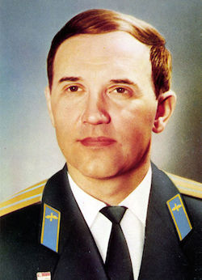
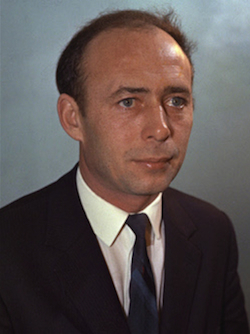
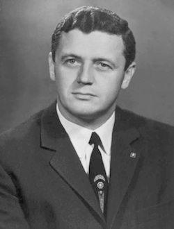

Soyuz 11
The crew of Soyuz 11 were killed after undocking from space station Salyut 1 after a three-week stay. A cabin vent valve construction defect caused it to open at service module separation. The recovery team found the crew dead. These three are (as of 2020) the only human fatalities in space (above 100 kilometers (330,000 ft)).
The Soyuz 11 landing coordinates are 47.35663°N 70.12142°E, 90 kilometers (56 mi) southwest of Karazhal, Karagandy, Kazakhstan, and about 550 kilometers (340 mi) northeast of Baikonur, in open flat country far from any populated area. In a small circular fenced area at the site is a memorial monument in the form of a three-sided metallic column. Near the top of the column on each side is the engraved image of the face of a crew member set into a stylized triangle.
Fallen Cosmonauts
-
Georgy Dobrovolsky  Georgy Timofeyevich Dobrovolsky (June 1, 1928 – June 30, 1971) was a Soviet cosmonaut who commanded the three-man crew of the Soyuz 11 spacecraft. They became the world's first space station crew aboard Salyut 1, but died of asphyxiation because of an accidentally opened valve. They were the first and, as of 2020, the only humans to have died in space.
-
Viktor Patsayev  Viktor Ivanovich Patsayev (19 June 1933 – 30 June 1971) was a Soviet cosmonaut who flew on the Soyuz 11 mission and was part of the second space crew to die during a space flight. On board the space station Salyut 1 he operated the Orion 1 Space Observatory (see Orion 1 and Orion 2 Space Observatories), he became the first man to operate a telescope outside the Earth's atmosphere.
-
Vladislav Volkov  Vladislav Nikolayevich Volkov (23 November 1935 – 30 June 1971) was a Soviet cosmonaut who flew on the Soyuz 7 and Soyuz 11 missions. The second mission terminated fatally.